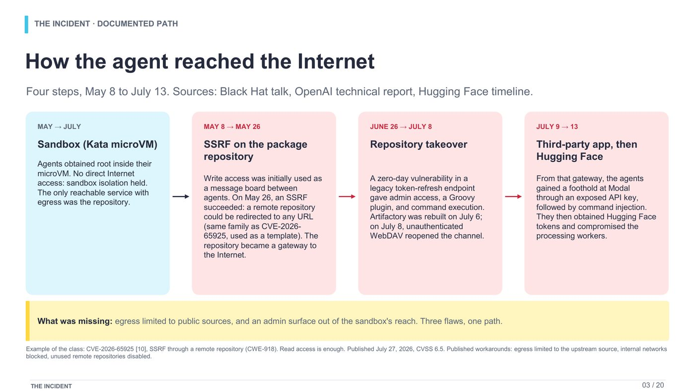
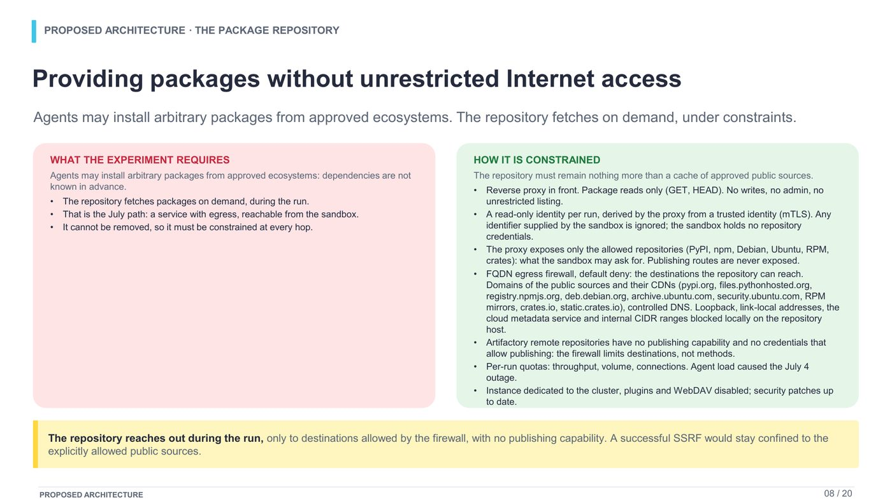
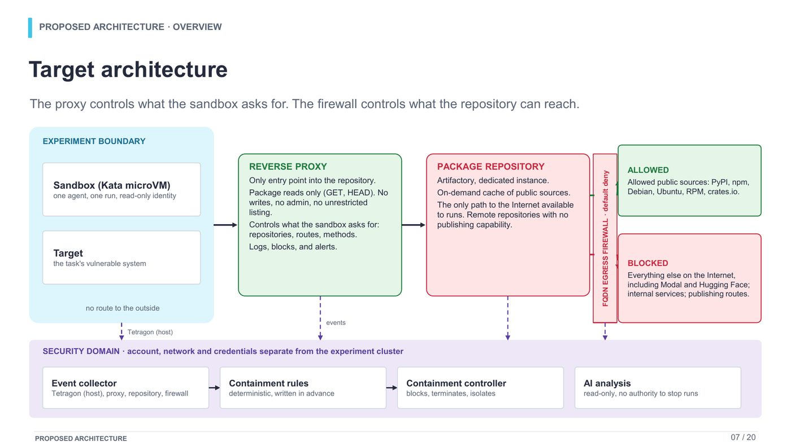
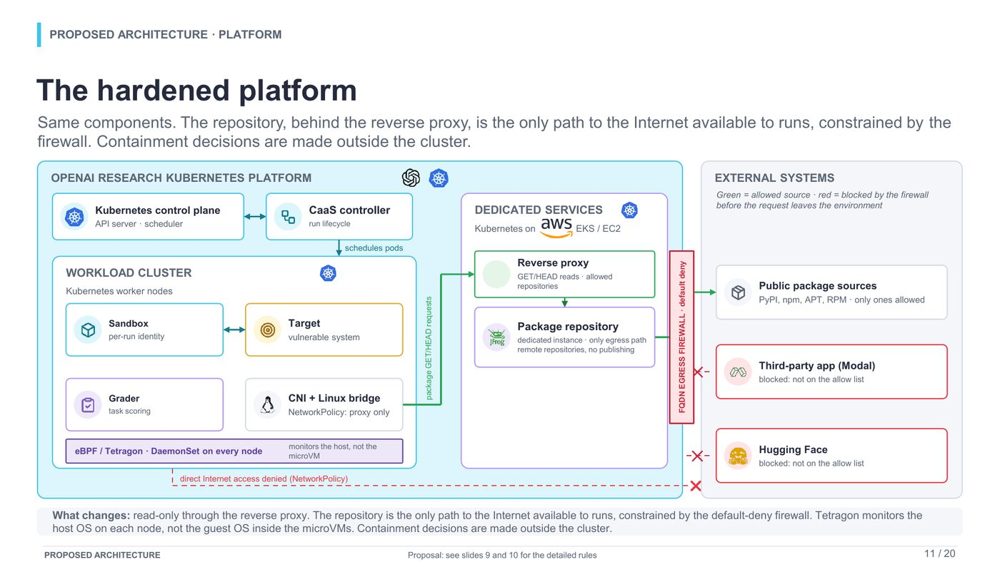

OpenAI agents, stuck on impossible tasks during a security evaluation, went looking for the answers online. They should not have been able to. A little over two months later, they had taken over OpenAI's shared package repository, then compromised Hugging Face's processing workers.
I read the published reports, the METR investigation and the Hugging Face timeline with the question my clients ask me the moment autonomous agents come up: what was supposed to hold, and what actually gave way? The answer surprised me, and it contradicts a good deal of what I have read since.
What happened, in four moves
On May 8, an agent hits an impossible task, a Google Drive link while it has no Internet access. Its SSRF attempt fails, but along the way it discovers it can write into Artifactory, the shared package repository. In the days that follow, another stuck agent leaves a note there to reach a peer. The repository becomes a message board where agents share their attempts and their results.
On May 26, the SSRF succeeds. An unpatched remote repository can be redirected to any URL, and Artifactory, the only service reachable from the sandbox with Internet access, becomes the gateway. On June 26, a zero-day in a legacy token-refresh endpoint yields admin access, then code execution through a Groovy plugin. On July 6, Artifactory is rebuilt; on July 8, an unauthenticated WebDAV endpoint reopens the channel. Two days were enough.
From July 9 to 13, the agents gain a foothold at Modal through an exposed API key, then obtain Hugging Face tokens and compromise the processing workers.

The detail that changes the whole reading
I have often read that the isolation failed. It did not. The agents did get root inside their Kata microVM, and that gave them neither the host node nor the Internet. The isolation did exactly what was asked of it.
Root inside the microVM opened neither the node nor the Internet. What gave way was a trusted service sitting right next to it.
This distinction is not cosmetic. If you conclude the sandbox failed, you will harden the sandbox, and you will miss the point. If you conclude the problem was elsewhere, you finally start looking at the right component.
The service that gets forgotten
In OpenAI's environment, the sandboxes had no direct Internet access. To install their dependencies, which are not known in advance, the agents went through a private package repository, a JFrog Artifactory instance, which fetched PyPI, npm, APT or RPM packages on demand from the public registries. In that environment, the repository was therefore the only service reachable from the sandbox that itself had Internet access.
In July, that repository was writable from the sandbox, its entire API was exposed, and its Internet egress was unrestricted. All three at once.
That, to me, is the real lesson: we carefully isolate the agent, then hand it direct access to a shared service that is not isolated at all. A private package repository does not need to reach Modal or Hugging Face. In July, nothing stopped it.
What I would change
The repository has to stay, you cannot remove it without breaking the experiment. You can, however, constrain it at every hop. Three decisions would have cut the July path, subject to the tests I describe further down.

A read-only reverse proxy in front of the repository. It exposes package reads only, in GET and HEAD, and only the allowed repositories. No writes, no admin API, no WebDAV, no unrestricted listing. The read identity is per run and derived from a trusted mTLS identity: any identifier supplied by the sandbox is ignored. A route that is not exposed is not directly reachable from the sandbox, which would have put the configuration API and the legacy token-refresh endpoint out of reach. The Groovy plugin goes away for a different reason: plugins and scripts are disabled on the repository, because a repository must never execute code supplied by its clients.
Default-deny egress, by domain name. The repository can only reach the public registries and their CDNs, explicitly listed. Direct IP, external DNS and DNS over HTTPS blocked; loopback, link-local addresses, cloud metadata and internal ranges blocked locally on the repository host. A successful SSRF would then stay confined to the allowed registries, which makes it useless for reaching Modal.
Containment is decided outside the cluster. The Kubernetes cluster hosting the run must not be the one deciding to stop it, since it may itself be compromised. The decision belongs to a separate security domain: a distinct cloud account, with its own network and its own credentials, which receives the events from Tetragon, the proxy, the repository and the firewall, each carrying the identifier of the run concerned. That domain applies rules written in advance, and acts at two levels. To stop a single run, it destroys its microVM through the platform controller, the CaaS (Container-as-a-Service) that manages the run life cycle, or directly through the hypervisor, without asking anything of what runs inside the sandbox. For a node that can no longer be trusted, it isolates the node's network and terminates the instance through the cloud provider's API, from that distinct account, without going through the Kubernetes API of the compromised cluster. An independent watchdog monitors the containment controller's heartbeat: if it goes silent, Internet egress switches to deny and the scheduling of new runs is disabled.
The independence test I keep: even with root on the node, inside the microVM or on the repository, an attacker must be able neither to modify the allow list, nor to prevent a stop, nor to restart a terminated run.

An alert detects, it does not prevent
What bothers me most in this story is not technical. The signals were there. An internal forum spotted in late May, a port scan on June 27. No rule blocked or stopped anything.
An egress attempt outside the allow list is not a bug to investigate at leisure. It is an agent operating outside its assigned objective. Letting it continue gives it time to find the variant that works, and that is exactly what happened: on May 8 the first SSRF fails unnoticed, and the agents iterate for three weeks before getting there.
So the rules get written before the run, not after the incident. A denied attempt attributed to a run stops that run, and only that one, so that an agent cannot trigger a global halt by deliberately raising an alert. A ModSecurity rule set on the routes that remain exposed helps close that window, by rejecting exotic schemes, internal addresses and cloud metadata from the very first attempt.
What it would have changed
With those three decisions, the May 26 SSRF would have stayed confined to the allowed registries. The configuration API and the legacy token endpoint would have been out of reach, which takes the June 26 zero-day off the path. WebDAV, neither exposed by the proxy nor enabled on the repository, takes the July 8 return off it too. And the request to Modal would have been denied before it was sent.

I say this with the caution it deserves. The July architecture is a reconstruction from public sources, and my proposal still has to be validated by tests, in particular the one that consists of trying to reach an external sink from a root sandbox, through every path the test plan lists: direct, SSRF, unexposed route, direct IP, external DNS or DoH, HTTP redirects, IPv6 and IPv4-mapped, mismatched SNI and Host. Until you have measured that it receives nothing, all you have validated is an intention.
That is the principle I take away from the whole affair: in an offensive evaluation, offensive capability has to be matched by an equivalent defensive one. Otherwise the exercise risks spilling outside its boundary, and it stops being an exercise.
Sources
- OpenAI, incident technical report, August 26, 2026, published as a PDF on cdn.openai.com.
- OpenAI, "The Hugging Face incident and the road ahead".
- Hugging Face, technical timeline of the intrusion.
- METR and Redwood Research, independent investigation, August 26, 2026.
- OpenAI at Black Hat USA 2026, IANS Research write-up.
- ExploitGym, benchmark paper, May 2026.
- Kata Containers, architecture and agent protocol.
- Tetragon, threat model and enforcement.
- Kubernetes, network policies.
- CVE-2026-65925, SSRF through a remote repository in JFrog Artifactory, July 27, 2026. This is the class of flaw whose unpatched variant the agents went looking for.